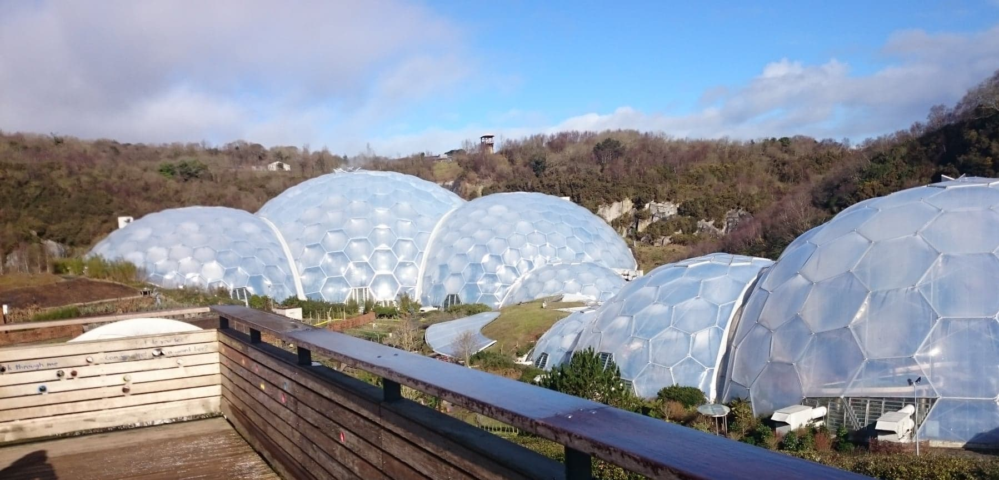

O MNIE
Jestem studentem II roku Informatyki na studiach I stopnia na Wydziale Elektroniki, na Politechnice Wrocławskiej.Programowaniem zainteresowałem się w liceum, zaś obecnie skupiam się na poszerzaniu horyzontów
w dziedziny wiedzy ogólnoinformatycznej oraz doskonalę swoje umiejętności w języku HTML, CSSS oraz Javascript.
EDUKACJA
- 2017-obecnie Politechnika Wrocławska
Wydział Elektroniki
Kierunek Informatyka
Studia I stopnia - 2014-2017 Liceum im.Mikołaja Kopernika w Kołobrzegu
Profil matematyczno-fizyczny z elementami informatyki
UMIEJĘTNOŚCI
- Vegas Pro (biegły)
- Pakiet Office (biegły)
- C++ (podstawowy)
- JAVA (podstawowy)
NARZĘDZIA IT:
- Język angielski (C1)
- Język niemiecki (A1)
- Język hiszpański (A1)
JĘZYKI OBCE:
- Prawo jazdy kat. B
- Certyfikat barmański
INNE:
DZIAŁALNOŚĆ STUDENCKA
- Starosta kierunku Informatyka
- Opiekun kierunku Informatyka na wydziale Elektroniki
- Radny Wydziału Elektroniki
ZAINTERESOWANIA
Wśród wielu moich zainteresowań, to właśnie podróże i poznawanie nowych zakątków świata jest moim ulubionym.Oprócz podróży, lubię pływać, czytać książki i składać origami.
